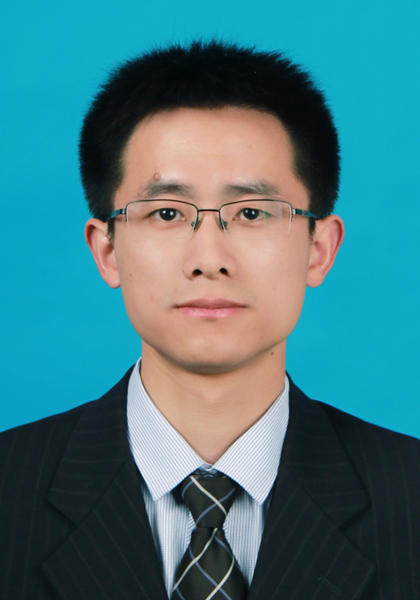
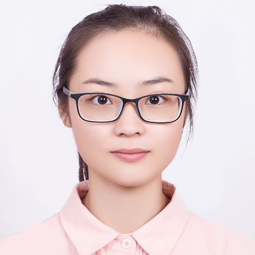
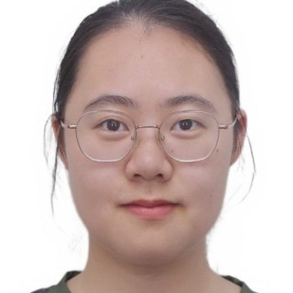

PhD Student · Fall 2023
Yuyang Zhang
Trustworthy LLM-powered agents and security of text-to-image models.
Agent Security · T2I Security
Principal investigator
Professor of Cyber Science and Engineering · Wuhan University
Run Wang is a full professor in the School of Cyber Science and Engineering at Wuhan University. His research lies at the intersection of security, privacy, and AI, with a focus on trustworthy generative AI and AI-enabled vulnerability discovery and analysis.
He received his Ph.D. in Information Security from Wuhan University in 2018 under the supervision of Prof. Lina Wang. After completing postdoctoral research at Nanyang Technological University with Prof. Liu Yang, he joined Wuhan University in 2021 and was promoted to full professor in 2025.
Trustworthy LLM-powered agents and security of text-to-image models.
Agent Security · T2I Security
Researches the safety and trustworthiness of AI-generated content.
Co-supervised with Prof. Lina WangAIGC Safety
Applies AI to security, with a focus on vulnerability discovery and analysis.
Co-supervised with Prof. Lina WangAI for Security · Vulnerability Discovery
Works on advanced vulnerability discovery and exploitation.
Vulnerability Research
Vulnerability discovery and exploitation in edge devices and vector databases.
Edge Devices · Vector Databases
Security and privacy of multimodal large models, including backdoors and jailbreaks.
Multimodal LLM Security
Vulnerability discovery and exploitation in edge devices and vector databases.
Systems Security
Researches the security and safety of text-to-image models.
T2I Security · AI Safety
Copyright protection and unsafe-content risks in text-to-image models.
T2I Model Security
Researches vulnerability discovery, exploitation, and system security.
System Vulnerabilities
Vulnerability discovery and exploitation with a focus on system vulnerabilities.
System Security
Researches web vulnerability discovery and mining.
Web Security
Researches agent security and the safety of text-to-image models.
Agent Security · T2I Safety
Researches automated penetration testing and vulnerability discovery.
Automated Penetration Testing · Vulnerability Discovery
Researches vulnerability discovery and exploitation.
Vulnerability Discovery · Exploitation
Researches automated vulnerability remediation.
Vulnerability Remediation
Researches the security of autonomous AI agents.
Agent Security
Works on security and privacy challenges in artificial intelligence.
AI Security & Privacy
Researches AI security and privacy.
AI Security & Privacy
Works on security and privacy challenges in artificial intelligence.
AI Security & Privacy
Works on AI security and privacy.
National Scholarship · 2023, 2024
Works on AI security and privacy.
National Scholarship · 2024
Researches agent security and the safety of text-to-image models.
Agent Security · T2I Safety
Researches agent security and the safety of text-to-image models.
Agent Security · T2I Safety
Researches the safety of text-to-image models.
T2I Safety
Researcher
Huawei
PhD Student
University of Utah
Master Student
Carnegie Mellon University
Master Student
Tsinghua University
Master Student
Peking University
Master Student
Peking University
PhD Student · Full Scholarship
Nanyang Technological University
Master Student
Peking University
PhD Student
Fudan University
Master Student
Zhejiang University
Master Student
University of Science and Technology of China
Technology Industry
Alibaba
PhD Student
Huazhong University of Science and Technology
Master Student
Peking University
Technology Industry
Alibaba
Technology Industry
Alibaba
Technology Industry
Alibaba
Alumnus
S2PE Lab